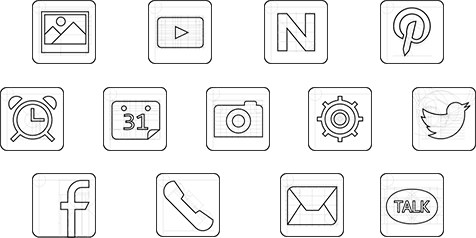
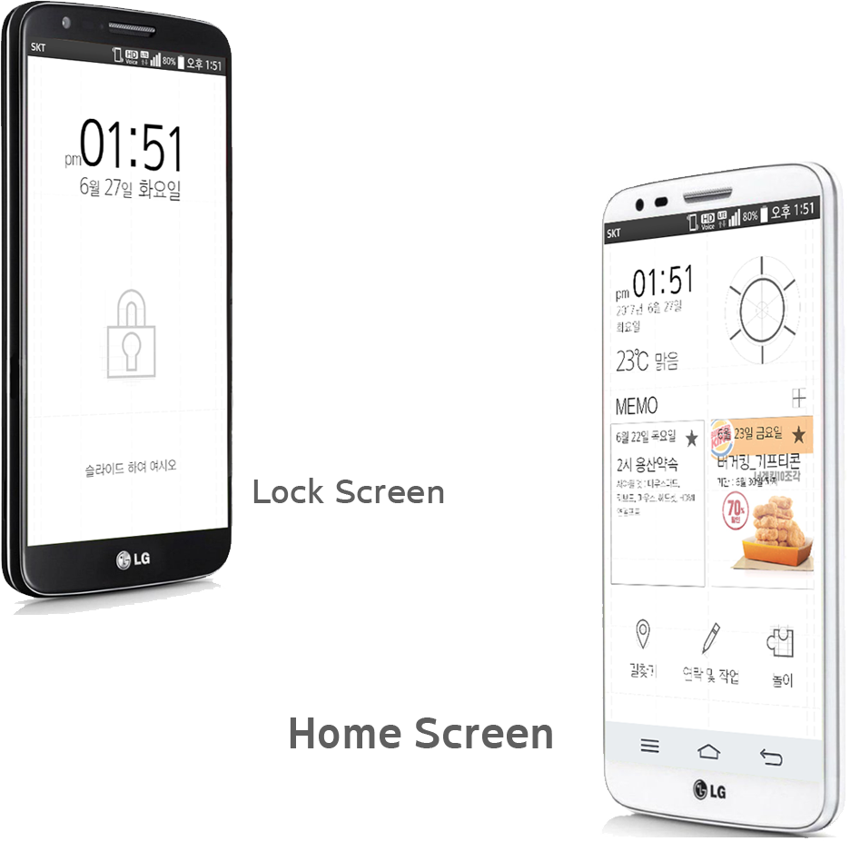
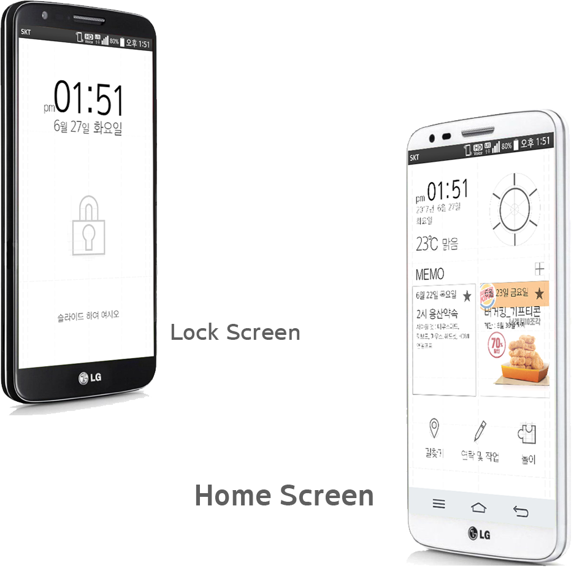

BLUEPRINT
UI LOCK / HOME
SCREEN PROJECT
Icon
Font
아리따-돋움 TTF Thin
아리따-돋움 TTF Light
아리따-돋움 TTF Medium
아리따-돋움 TTF SemiBold
아리따-돋움 TTF Bold

UI LOCK / HOME
SCREEN PROJECT
아리따-돋움 TTF Thin
아리따-돋움 TTF Light
아리따-돋움 TTF Medium
아리따-돋움 TTF SemiBold
아리따-돋움 TTF Bold

윤희승 (YOON HEE SEUNG)
010 - 5095 - 9963
hiyoon9@gmail.com
제작기간 : 2017.7 ~ 2017.8
1인 제작